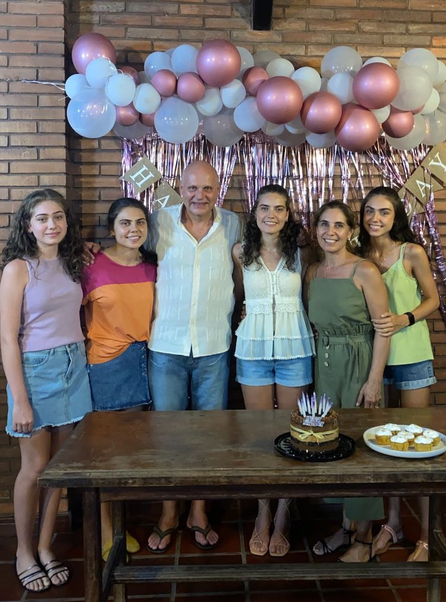
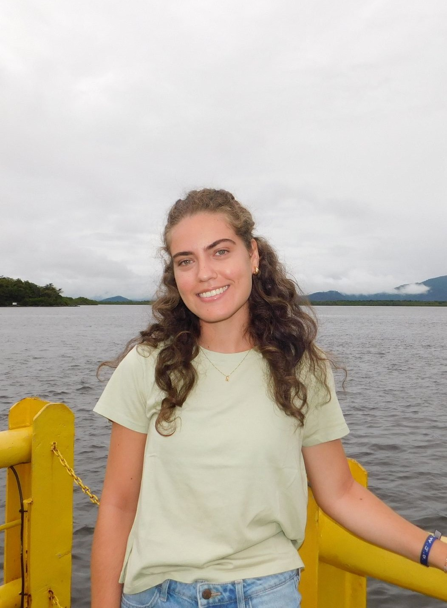

Welcome to Steffi Wedderhoff's gallery! Here, you'll discover more about me and the things that bring me joy. As an avid nature enthusiast, I find solace and inspiration in the great outdoors. Hiking through lush forests, scaling majestic mountains, or simply basking in the beauty of a vibrant sunset or sunrise are some of my favorite pastimes. Whether it's exploring hidden trails or immersing myself in the tranquility of nature, I'm always eager to embark on new outdoor adventures. Family and friends hold a special place in my heart, and I cherish the moments spent laughing and creating memories together. Whether it's a cozy gathering around a bonfire or a lively game of tennis, I thrive in the company of loved ones. Green, the color of life and renewal, resonates deeply with me. Its calming presence and connection to nature never fail to uplift my spirits. When I'm not immersed in the natural world, you'll often find me capturing its beauty through photography or expressing my creativity through drawing and lettering. There's something magical about bringing landscapes to life on paper or crafting intricate designs with words. I hope you find as much joy and inspiration here as I do in sharing my passions with you.
 